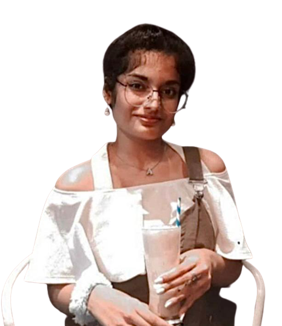
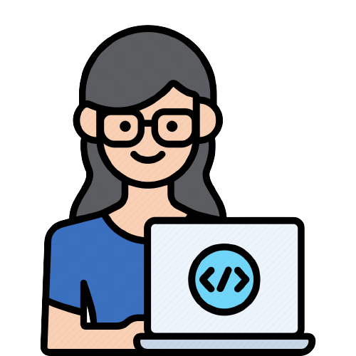

Hi! My name is Aura and I am a passionate

Work Experience

HTML Developer
Passionate HTML Developer with expertise in HTML, CSS, and JavaScript. Adept at translating designs into responsive, visually engaging websites. Proficient in semantic HTML5, CSS preprocessors, and JavaScript frameworks. Skilled in cross-browser compatibility and Git. Capable of optimizing web performance and collaborating on content management systems. Strong problem-solving skills, with a commitment to clean, well-documented code. Dedicated to staying updated on industry trends and collaborating with cross-functional teams. Effective communicator and team player.
Game Developer
Creative and skilled Game Developer with a passion for crafting immersive and captivating gaming experiences. Proficient in programming languages such as C++, C#, and Java, and experienced with game engines like Unity and Unreal Engine. Adept at developing gameplay mechanics, 2D/3D graphics, and user interfaces. Strong problem-solving and debugging skills, ensuring games run smoothly and are free from glitches. Collaborative team player with the ability to work with designers and artists to bring visions to life. Continuously exploring emerging technologies and staying updated on gaming industry trends to create engaging and innovative games.
Graphic Designing
As a skilled Graphic Designer, I specialize in creating visually appealing and user-friendly websites. With a keen eye for aesthetics and a deep understanding of user experience (UX) principles, I transform concepts into elegant and responsive web designs. Proficient in HTML, CSS, and JavaScript, I bring designs to life while ensuring cross-browser compatibility and mobile responsiveness. Collaborating closely with clients and stakeholders, I translate their brand identities and requirements into captivating digital interfaces. My work combines creativity and functionality, resulting in websites that engage users and leave a lasting impression. I'm dedicated to staying updated on the latest design trends and technologies, ensuring the websites I create are modern and effective.
Video Editor
As a skilled Video Editor, I excel at turning raw footage into captivating visual stories. With expertise in video editing software and a creative eye, I meticulously cut, arrange, and enhance footage to create engaging content. I have a deep understanding of pacing, color correction, and audio synchronization, ensuring the final product meets high-quality standards. Whether it's a promotional video, vlog, documentary, or any other project, I bring out the best in every frame to convey the intended message. I'm adaptable and detail-oriented, committed to delivering videos that captivate and resonate with the audience while meeting project deadlines.
Backend Designer
A Backend Designer is a pivotal role in web development, responsible for crafting the hidden infrastructure that powers websites and applications. Proficient in languages like Python, Java, or Node.js, I design, develop, and maintain server-side logic, databases, and APIs. My focus is on creating efficient and secure systems that seamlessly handle data, user interactions, and business operations. I excel in database management, optimizing performance, and ensuring data integrity. Collaborating with frontend developers and ensuring a smooth user experience is central to my role. My problem-solving skills and commitment to data security and scalability help businesses thrive in the digital landscape.
Freelancer
As a Freelancer, I am a versatile professional who offers services independently to clients, businesses, or organizations. Specializing in various fields, such as web development, graphic design, writing, or consulting, I have the flexibility to work on a project-by-project basis. With the ability to manage my schedule, I provide tailored solutions to meet my clients' specific needs. My success is driven by my skills, self-discipline, and the ability to build a strong reputation. Whether it's coding websites, creating compelling designs, or delivering content, I bring expertise and dedication to each assignment, ensuring client satisfaction and project success.